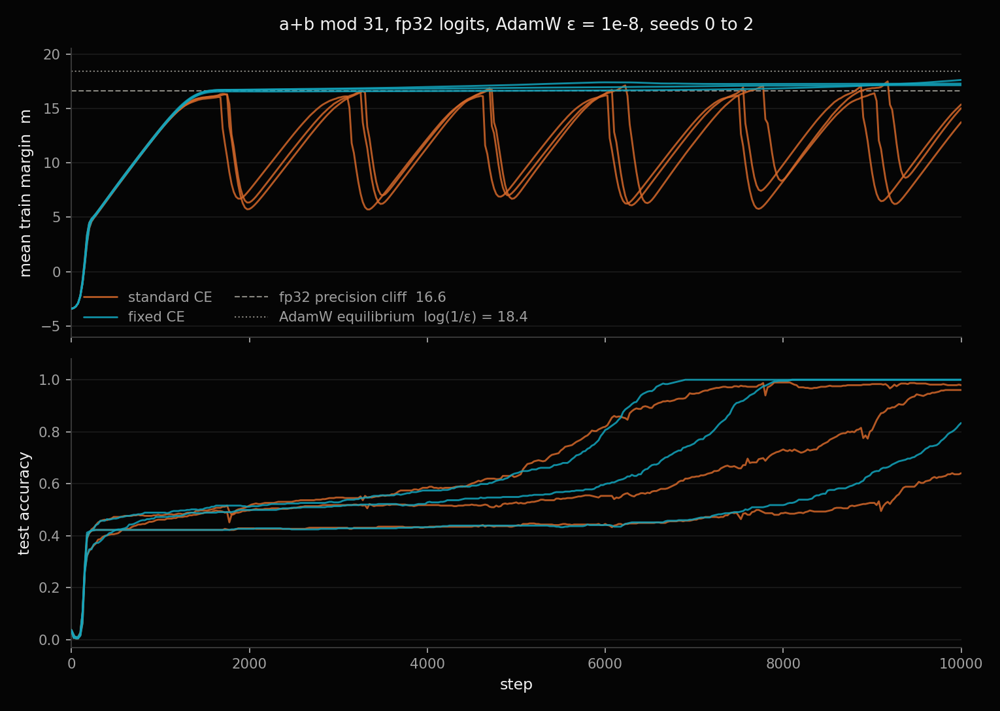
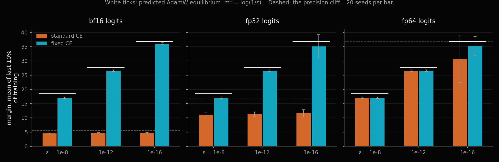
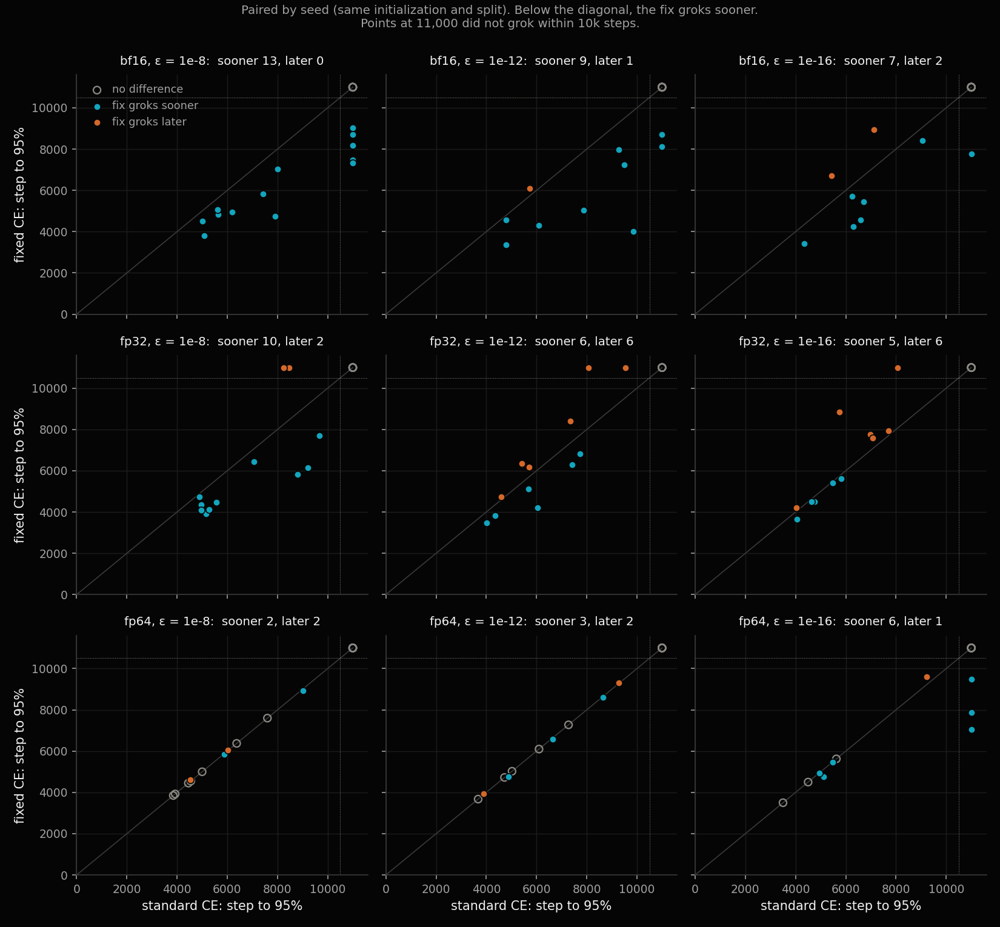

Recreating Interesting AI Papers: The Gradient That Forgot to Sum to Zero, and What Fixing It Does to Grokking
A recreation of A Fix for Softmax and Cross-Entropy (Barron, Gnanapragasam and Tschannen, Google DeepMind, October 2026). PyTorch, CPU only, about 490 training runs. Every number below came out of this repository.
Every classifier ends the same way. Subtract the max logit, exponentiate, normalize, take the log. It is the numerically stable version, and for almost everything it is stable enough.
This paper is about the “almost”.
A gradient with the wrong total
Take logits z = [9, -9, -9], target in slot 0, in fp32. The standard log-softmax computes log(1 + 2e^-18). 2e^-18 is about 3e-8, which is below half an fp32 ulp at 1.0, so 1 + 3e-8 rounds to exactly 1. The loss is 0. The gradient on the target is 0.
The gradients on the two wrong classes come from an expression that never adds that 1, so they survive at 1.52e-8 each. The gradient comes out as [0, 1.52e-8, 1.52e-8]. It should be [-3.05e-8, 1.52e-8, 1.52e-8].
It no longer sums to zero.
Two things went wrong at once. Write the broken vector as a uniform shift (2a/3)·[1, 1, 1] plus [-2a/3, a/3, a/3]. The second part points the right way at a third of the right size. The first part is pure noise. Softmax does not care about a uniform shift of its inputs. The weights and biases that produced those inputs do.
Prieto et al. named this Softmax Collapse in 2025 and tied it to grokking. It switches on whenever the margin m = z_t - logsumexp(z_others) passes a precision cliff: ln 2^8 ≈ 5.5 in bf16, ln 2^24 ≈ 16.6 in fp32, ln 2^53 ≈ 36.7 in fp64.
Remember 16.6.
Four lines
This paper’s fix is to never let the 1 into the sum. Pivot on the target, give its slot a constant zero, sum only the other exponentials, and add the 1 back with log1p. Shift by the largest remaining term first, or a confidently wrong example overflows exp:
shifted = torch.where(is_t, 0, z - z_t) # z_j - z_t; target slot is 0
b = shifted.max(-1, keepdim=True).values.detach() # >= 0, guards exp overflow
s = torch.where(is_t, 0, (shifted - b).exp()).sum(-1, keepdim=True)
loss = b + torch.log1p(s + torch.expm1(-b)) # = softplus(-m)The shift is not decoration. Without it, the loss is inf and the gradient NaN once a wrong logit leads the target by 100 in fp32 or bf16, or by just 12 in fp16. I checked.
On [9, -9, -9] the fixed loss gives 3.046e-8 and gradient [-3.046e-8, 1.523e-8, 1.523e-8]. Those are the paper’s printed numbers, and they sum to exactly zero. Where the old loss was already fine, the two agree to 1e-15 in fp64.
There is a sibling bug for soft targets, Softmax Cancellation. A distillation gradient is q - p, the difference of two nearly equal probabilities, and that subtraction eats precision. The paper rewrites the gradient in terms of z_S - z_T so the cancellation happens in the algebra instead of in floating point. On their example, my implementation matches the exact answer to eight significant digits (exact meaning fp64, from the fp32-rounded student logits). PyTorch’s built-in is off by 30 to 65 percent per component.
Why Adam cares
A wrong gradient of 1e-8 sounds like a rounding footnote. Under SGD it would be.
Adam divides each parameter’s gradient by a running root-mean-square of that parameter’s own history, plus ε. When the gradient is much bigger than ε, a tiny but consistent gradient gets a full-sized step. Near ε, it gets about half of one. Either way, a small error that always points the same way gets taken seriously.
The paper also works out where AdamW wants the margin to stop. At equilibrium the normalized gradient balances weight decay, which happens when the per-example gradient is around ε. The gradient scales like e^-m, so the margin settles at m* ≈ log(1/ε): 18.4 for the default ε = 1e-8, 27.6 for 1e-12, 36.8 for 1e-16.
18.4 is above 16.6. Run default AdamW long enough on data it can fit perfectly, and it asks fp32 cross-entropy for a margin fp32 cannot represent.
The setup
Following the paper: a + b mod 31, half the table for training, a one-layer, four-head, width-64 ReLU transformer with no LayerNorm, full-batch AdamW at lr = 1e-3, β = (0.9, 0.98), weight decay 1, 10k steps. I swept the loss (standard or fixed), the precision of the logits entering the loss (bf16, fp32, fp64), and ε (1e-8, 1e-12, 1e-16).
The first thing that went wrong was mine. With PyTorch’s default initialization, my transformer usually took 10k to 35k steps to grok, where the paper’s takes under 10k. Default embeddings are drawn from N(0, 1). At width 64 that gives every token vector a norm of about 8, and weight decay has to grind it down before the network can generalize. Embeddings at 1/√d put grokking roughly back on the paper’s timescale: 4k to 11k steps on the seeds I probed.
The second thing that went wrong was also mine. My first pass used five seeds, and in fp32 it said the fix hurt accuracy. I built a theory around that: the collapses act as helpful kicks. Then I tested the theory by adding artificial collapses to the fixed loss. The stuck seeds stayed stuck, and one seed that had grokked stopped grokking.
So the main grid uses 20 seeds per cell, 360 runs in all. Each seed fixes the initialization and the data split, so the two losses can be compared on the same seed. That pairing was the only way I found to separate the loss from the luck.
Everything ran single-threaded on CPU, 28 runs at a time, because someone else’s job had the GPU. fp32 rounds the same way on both, and the precision-dependent numbers below line up with the paper’s.
The slingshot

ε = 1e-8, seeds 0 to 2.Orange is the standard loss. The margin climbs toward 18.4 and reaches 16.6. The target gradient vanishes, and the margin falls back to about 6. Then it climbs again. At ε = 1e-8, all 20 standard-loss fp32 runs collapse 6 or 7 times in 10k steps. None of the 20 fixed-loss runs collapses once.
Cyan is the fixed loss. It passes the cliff as if it were not there and settles at 17.1.
This sawtooth is the “slingshot” that earlier work studied as a property of adaptive optimizers. Here it is a property of the loss arithmetic. Change four lines, change nothing else, and it is gone. That does not prove every slingshot everywhere has this cause, and neither the paper nor I claim it.
The equilibrium

ε, 20 seeds per bar, averaged over the last 10% of training. White ticks: predicted log(1/ε). Dashed: precision cliffs.| logits | loss | ε = 1e-8 | ε = 1e-12 | ε = 1e-16 |
|---|---|---|---|---|
| bf16 | standard | 4.6 | 4.6 | 4.6 |
| bf16 | fixed | 17.1 | 26.6 | 36.0 |
| fp32 | standard | 10.9 | 11.2 | 11.6 |
| fp32 | fixed | 17.1 | 26.6 | 35.1 |
| fp64 | standard | 17.1 | 26.6 | 30.6 |
| fp64 | fixed | 17.1 | 26.6 | 35.3 |
| predicted | 18.4 | 27.6 | 36.8 |
This is the result I trust most. With the fix, the margin lands about one unit below log(1/ε) in every precision, bf16 included. The standard loss in bf16 never gets past 4.6.
fp64 is a built-in control. For the two larger ε its cliff sits above the equilibrium, and the two losses agree to the decimal. At ε = 1e-16 the equilibrium sits just past the fp64 cliff, and the standard loss stops at 30.6. The paper reports 30.1.
One symbol, log(1/ε), predicts the margin across eight orders of magnitude in ε and three floating-point formats. That is the part of this paper I enjoyed most.
The student that should never move
Copy a teacher bit for bit and distill it into the copy. The correct gradient is zero. Not small. Zero.

lr = 2e-3, β = (0.9, 0.98), ε = 1e-8, no weight decay, T = 4, 2,000 steps, three seeds. The flat cyan floor is the KL evaluator’s own noise at 2e-18, reached by a student whose weights have not moved at all.| forward + loss | loss | |grad| at step 0 | max weight drift | final KL |
|---|---|---|---|---|
| bf16 | standard | 8e-6 | 0.65 | 5e-3 |
| bf16 | fixed | 0 | 0 | 0 |
| fp32 | standard | 1e-10 | 0.15 | 9e-5 |
| fp32 | fixed | 0 | 0 | 0 |
| fp64 | standard | 3e-19 | 0 | 0 |
In fp32 the standard loss hands Adam a 1e-10 gradient from a model that is already perfect, and the weights wander by up to 0.15. The fixed loss returns exactly 0.0. Two thousand steps later the student is still bit-identical to its teacher.
This setup is a best case for exposing the bug. With a full batch and an identical start, the rounding error is the same every step, so Adam can accumulate it. Mini-batch distillation into a different student would see something smaller and noisier. Accuracy also stayed at 100% here, whereas the paper reports a drop in its version.
The catch
The paper makes two claims about grokking. With the fix, grokking happens sooner, and final accuracy is higher and more reliable. Twenty paired seeds can test each one.

| logits | ε | fix groks sooner / later | p | median step to 95%, standard → fixed | final acc: fix higher / lower |
|---|---|---|---|---|---|
| bf16 | 1e-8 | 13 / 0 | <0.001 | 5925 → 4888 | 11 / 6 |
| bf16 | 1e-12 | 9 / 1 | 0.02 | 6988 → 4800 | 12 / 6 |
| bf16 | 1e-16 | 7 / 2 | 0.18 | 6450 → 5588 | 9 / 9 |
| fp32 | 1e-8 | 10 / 2 | 0.04 | 5425 → 4612 | 10 / 4 |
| fp32 | 1e-12 | 6 / 6 | 1.0 | 5688 → 5650 | 2 / 10 |
| fp32 | 1e-16 | 5 / 6 | 1.0 | 5612 → 5512 | 4 / 11 |
| fp64 | 1e-8 | 2 / 2 | 1.0 | 5000 → 5000 | 1 / 0 |
| fp64 | 1e-12 | 3 / 2 | 1.0 | 5562 → 5562 | 0 / 1 |
| fp64 | 1e-16 | 6 / 1 | 0.13 | 5125 → 4925 | 8 / 2 |
p is a two-sided sign test over the seeds that differ. Medians are over seeds where both losses grokked.
“Sooner” holds where the old loss breaks early and often. In bf16 at the default ε, the fix never made a seed grok later. 13 seeds grokked within 10k steps against 8, and the median grok step fell from 5925 to 4888. In fp32 the speedup is there at ε = 1e-8 and gone at smaller ε. fp64 behaves like a control should. Where the bug cannot fire, the two losses grok on the same step for 15 or 16 of 20 seeds, and the rest split evenly.
“Higher and more reliable” does not hold here. No cell shows a significant accuracy gain from the fix. bf16 leans its way. fp32 at small ε leans the other way, and one cell reaches p = 0.04, which among nine comparisons is something chance produces often enough that I would not lean on it. For the fp32, ε = 1e-12 cell the paper reports 99.6% against 96.4%. My medians are 95.6% against 97.8%.
The largest effect in the grid is not the loss. It is the seed. About half the seeds grok within 10k steps whichever loss they get. With three to five seeds, which is what the paper reports and what I started with, an accuracy gap of a few points can point either way by chance. Mine did.
What this is, and what it is not
- It is a faithful recreation of the method. Both of the paper’s worked examples reproduce to the printed digits.
- It is a strong reproduction of the mechanism over 20 seeds. The slingshot vanishes with the fix, and AdamW reaches the predicted
log(1/ε)margin in bf16, fp32 and fp64. - It is a strong reproduction of the distillation result, under conditions chosen to make the bug visible.
- It partly reproduces “groks sooner”: clearly in bf16, and in fp32 at the default
ε. - It does not reproduce “higher, more reliable final accuracy”.
- It is one task. Where the paper leaves the architecture unspecified, I filled in my own guesses, and the distillation teacher is my own. It runs in PyTorch on CPU rather than the authors’ JAX.
Why it is fun, and what it means
The fun is in where the bug lives. Cross-entropy is about as close to bedrock as deep learning gets, and its standard form quietly stops producing a zero-sum gradient at a margin of 16.6 in fp32. Four lines fix it, without changing anything where the old form was right.
How much that matters depends on whether you ever get near the cliff. A margin of 16.6 means a per-example loss of about 6e-8. Pretraining runs sit at several nats per token, and mini-batch noise, label smoothing and early stopping keep most models nowhere near that. PyTorch autocast already computes log_softmax and cross_entropy in fp32 under bf16 training, so the bf16 cliff at 5.5 only bites if your loss genuinely runs in bf16.
It bites where models fit their data completely: long full-batch training, small-data fine-tuning, memorization-heavy tasks like this one. It also bites in distillation, where the right gradient is near zero by design and Softmax Cancellation turns rounding into drift that Adam will follow.
So my conclusion is narrower than the paper’s grokking headline, and I think sturdier. The fix is correct and cheap, and it is worth having anywhere a loss runs at low precision or near a perfect fit. It makes grokking faster when the old loss breaks early. Whether it makes grokking better is still open. The obvious next experiment is mini-batch training of a real model with its loss genuinely in bf16, where the cliff sits at 5.5.
A gradient should sum to zero because the mathematics says so, not because the floating-point numbers happened to cooperate.
Code and raw results are at github.com/SteliosKyriacou/softmax-fix: softmax_fix.py (the losses, plus the paper’s worked examples), grok.py, distill.py, plots.py and results/. results/grok_v2/ is the 20-seed grid used above. results/grok/ and results/kick/ are the five-seed first pass and the failed kick test, kept for the record.